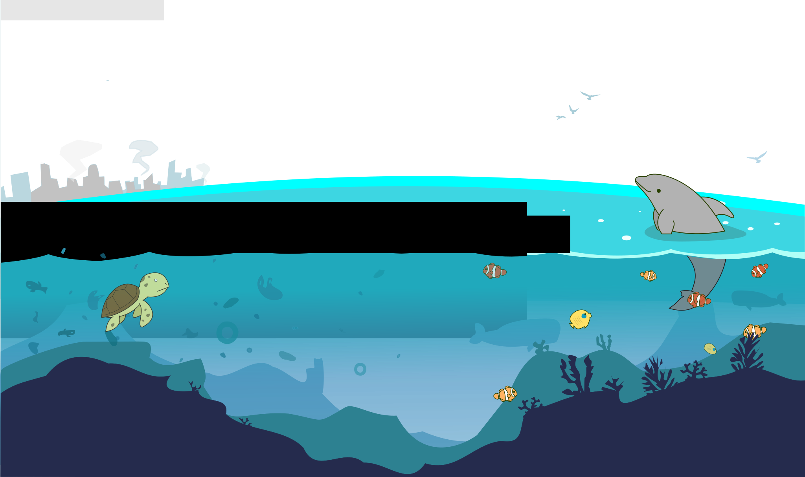
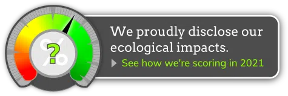

/ecobricks
Not for profit
No impact disclosure
open source
No impact disclosure
open source


Gobrik global ecobricking data is made available by the Ecobrick Alliance under a Creative Commons Attribution-ShareAlike 4.0 International License.
Please attribute all usage to "GoBrik.com/#global - Global Ecobrick Alliance" using the same license.